① Gemini 무료 키 발급 (1분)
키를 넣으면 빌더 안에서 버튼 한 번에 완성본이 나와요. 카드 등록 없이 무료예요.
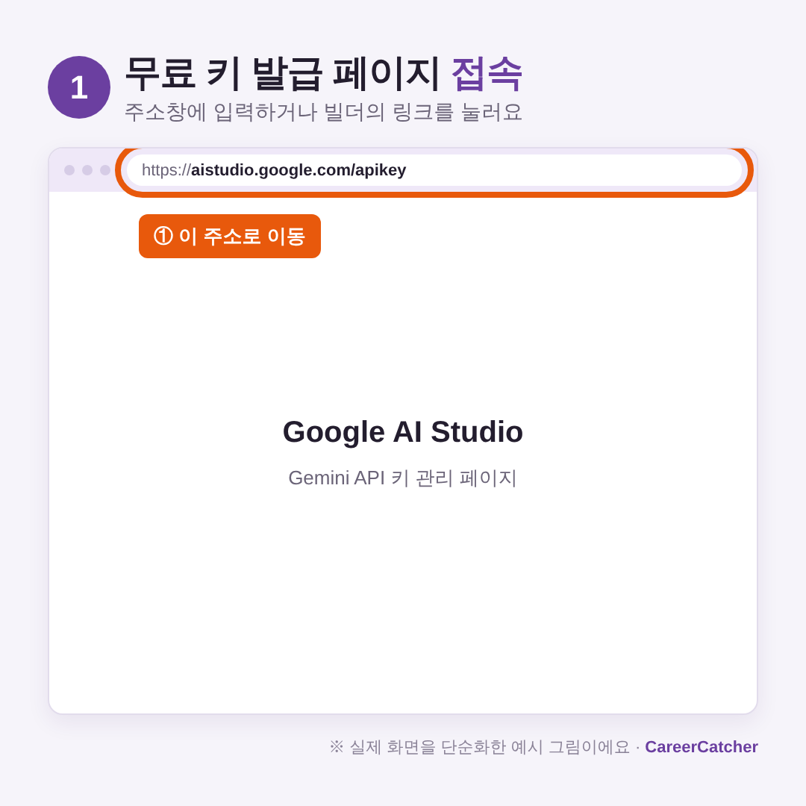
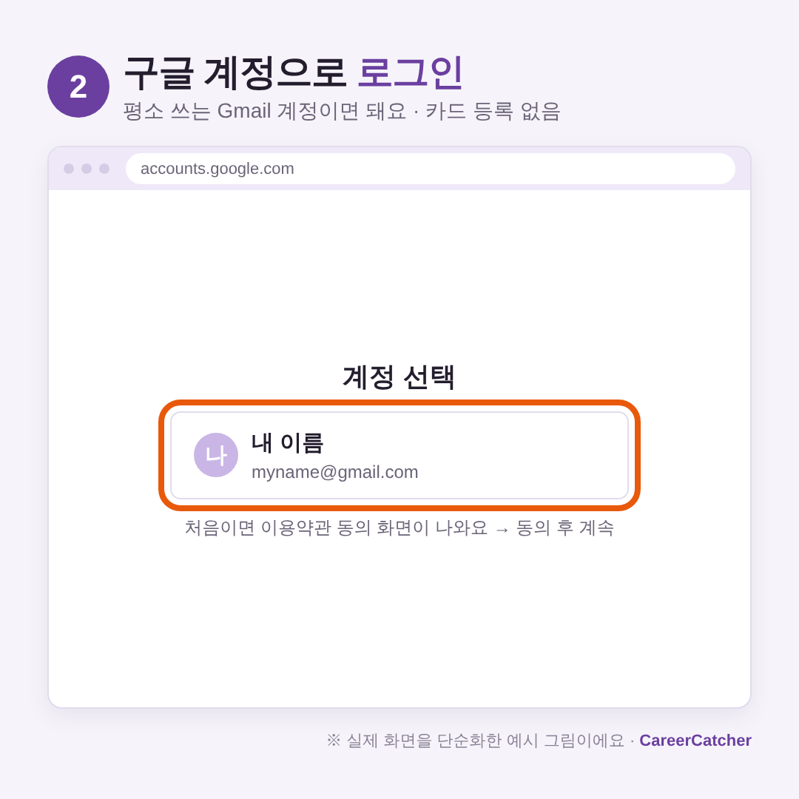
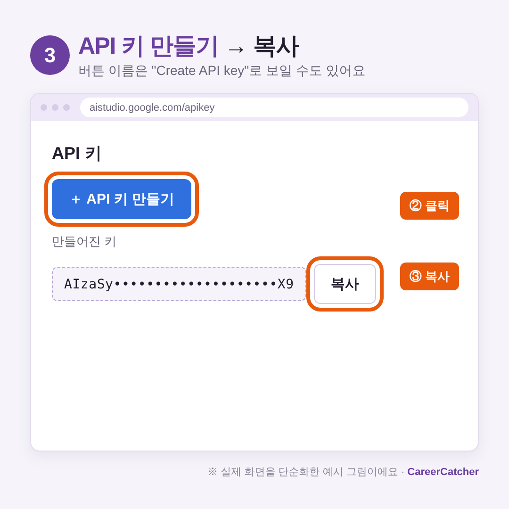
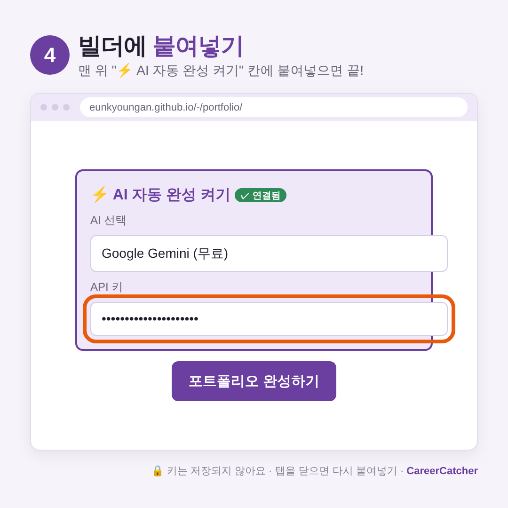
주소: aistudio.google.com/apikey · 위 그림은 실제 화면을 단순화한 예시예요. 화면 문구는 조금 다를 수 있어요.
② 포트폴리오 만들기
1맨 위 "⚡ AI 자동 완성 켜기"에 키 붙여넣기
키를 넣으면 배지가 ✓ 연결됨으로 바뀌어요.
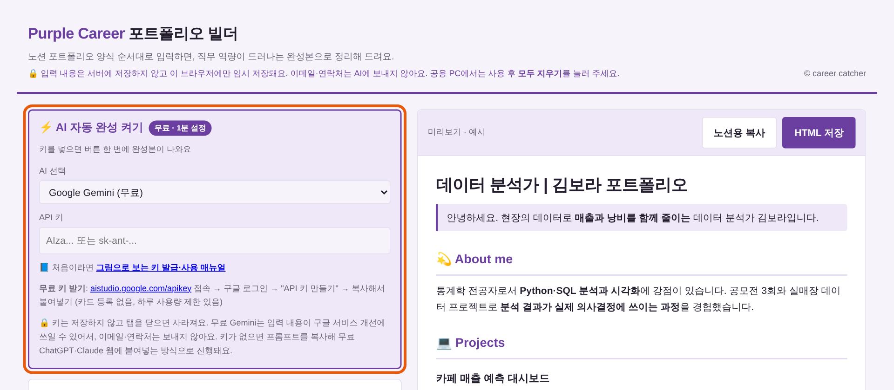
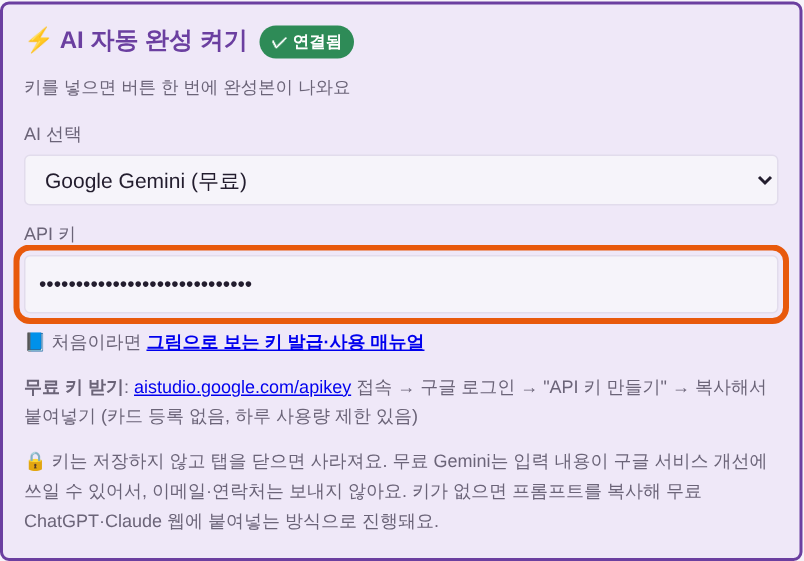
2처음이라면 직군 예시로 구조 익히기
아래쪽에서 직군을 고르고 [예시로 채우기]를 누르면 모든 칸이 채워져요. 내 내용으로 바꿔 쓰세요.
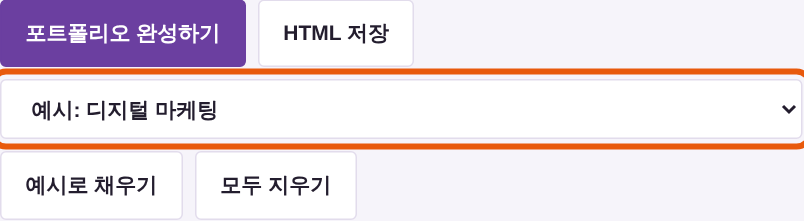
3프로젝트는 숫자 중심으로
성과 칸에는 전 → 후 숫자, 문제해결 칸에는 문제 → 원인 → 해결 → 결과 순서로 적어요. [프로젝트 추가]로 여러 개 넣을 수 있어요.
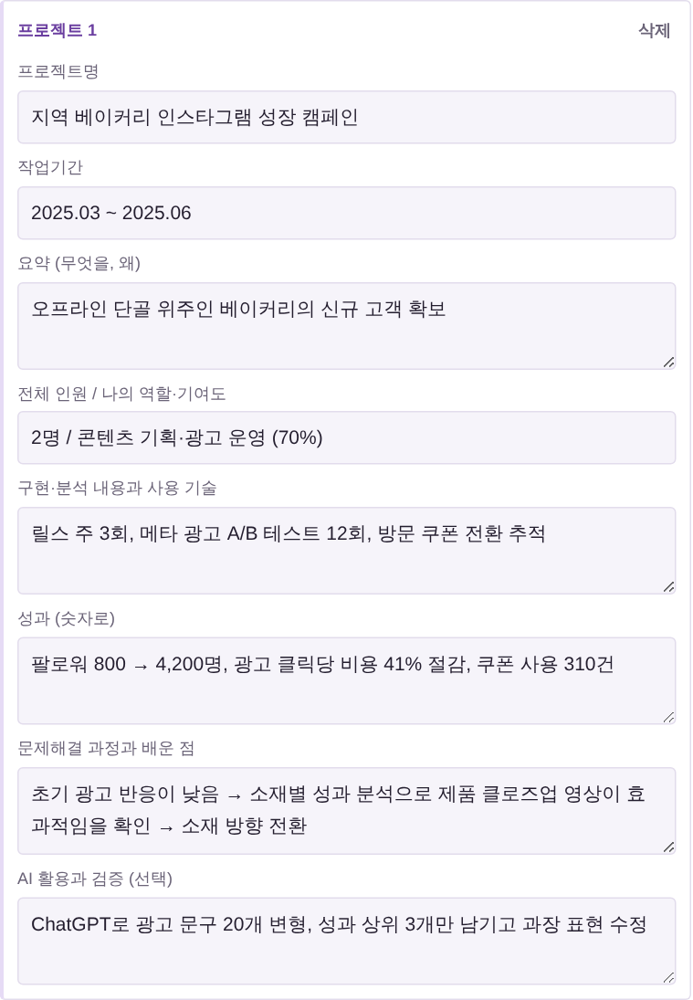
4[포트폴리오 완성하기] 클릭
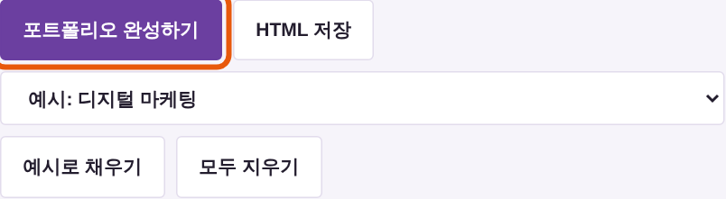
③ 완성본 확인 & HTML 내려받기
5오른쪽에서 완성본 확인 → [HTML 저장]
상태 줄에서 빠진 항목 점검과 사용 토큰 수를 확인할 수 있어요. 결과 아래에는 🔍 컨설턴트 피드백이 따로 나와요. 저장하는 HTML 파일에는 들어가지 않으니, 필요하면 [피드백 복사]로 따로 보관하세요. 빠진 항목이 있으면 한 번 더 생성하세요.
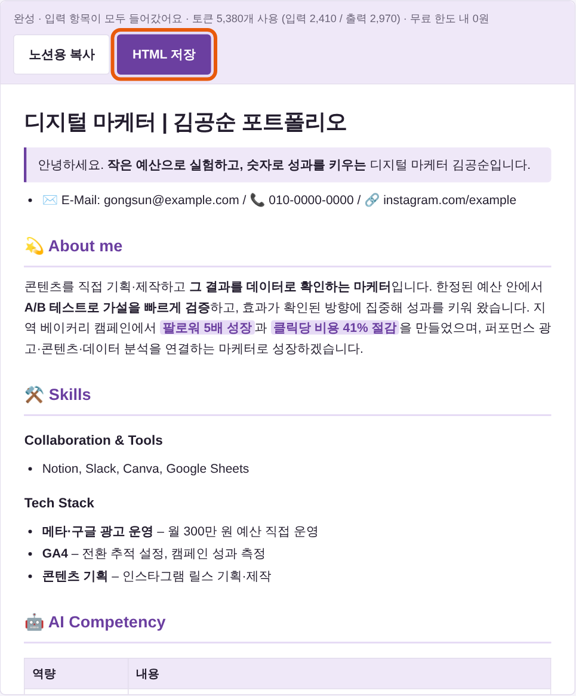
6내려받은 파일 열기
다운로드 폴더의 이름_portfolio.html을 더블클릭하면 브라우저에서 열려요. 그대로 제출하거나, 인쇄(Ctrl+P) → PDF로 저장할 수 있어요.
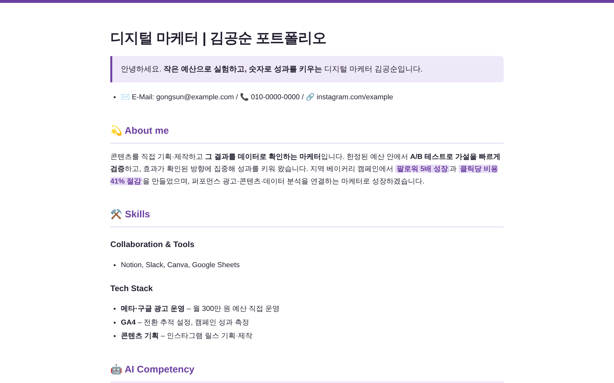
프로젝트는 핵심 표로 보이고, ▶ 상세 내용 보기를 누르면 나머지가 펼쳐져요.
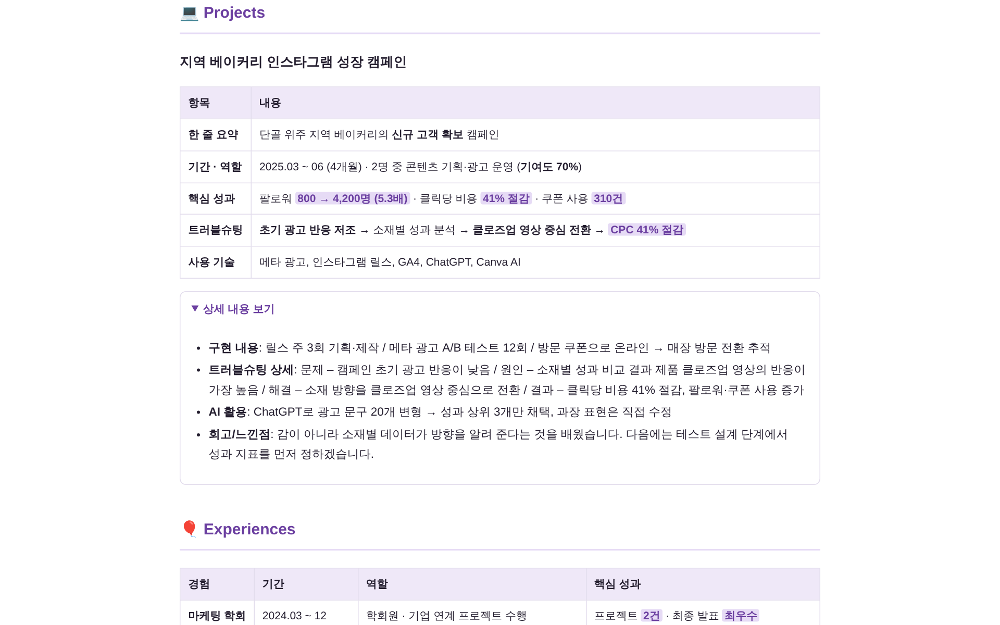
키 없이 쓰기
키가 없어도 무료로 만들 수 있어요. 단계가 조금 더 많아요.
A[포트폴리오 완성하기] → 프롬프트 자동 복사
BChatGPT 또는 Claude에 붙여넣고 보내기
CAI가 답한 글을 복사 → 빌더 오른쪽 칸에 붙여넣기 → [결과 적용하기] → [HTML 저장]
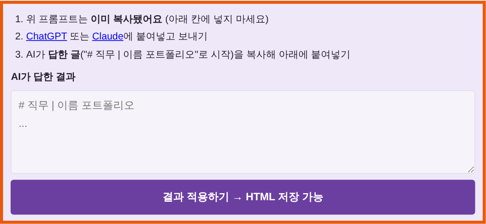
⚠ 프롬프트(“너는 퍼플커리어의 포트폴리오 컨설턴트다…”)를 그대로 붙여넣지 마세요. AI가 답한 글(“# 직무 | 이름 포트폴리오”로 시작)을 넣어야 해요.
자주 묻는 질문
| 질문 | 답변 |
|---|---|
| 비용이 드나요? | Gemini 무료 키는 하루 사용 한도 안에서 0원이에요. 생성 1회에 약 5천~1만 토큰을 써요. |
| 키가 저장되나요? | 저장되지 않아요. 탭을 닫으면 사라지니 다시 붙여넣으세요. 키는 다른 사람과 공유하지 마세요. |
| 내 정보가 AI로 가나요? | 이메일·연락처는 보내지 않아요. 나머지 입력은 AI 작성에 쓰여요. 실명 대신 이니셜을 써도 돼요. |
| 오류가 나요 | 상태 줄 문구를 확인하세요. “키가 올바르지 않아요” → 키 다시 복사, “사용량을 다 썼어요” → 잠시 후 다시 시도. |
| 예전 화면이 보여요 | Ctrl+F5(맥은 Cmd+Shift+R)로 새로고침하세요. |